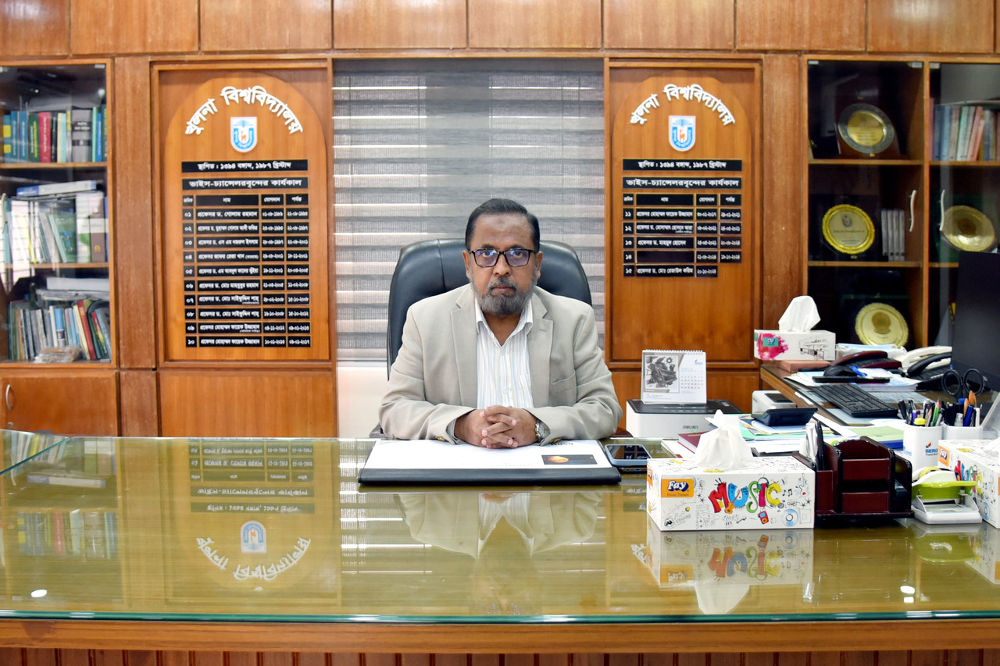

Welcome to Khulna University—a place of discovery, inspiration, and limitless possibilities.
It is my distinct honor and privilege to welcome you to Khulna University, a prestigious institution that stands at the forefront of academic excellence and innovation in Bangladesh. Since its inception, Khulna University has been committed to fostering an environment that encourages critical thinking, creativity, and collaboration, ensuring that our students and faculty are equipped to address the challenges of the 21st century.
Our university is built on the foundation of interdisciplinary learning, research, and community engagement. We are deeply committed to cultivating an inclusive and dynamic space where students from diverse backgrounds can thrive academically and personally. I believe that education is not merely the acquisition of knowledge but the development of skills, values, and ethics that contribute to the greater good of society.
At Khulna University, we pride ourselves on nurturing leaders who will shape the future of Bangladesh and beyond. Our academic programs are designed to inspire curiosity and push boundaries, while our faculty members—esteemed experts in their fields—are dedicated to guiding you on your intellectual journey.
As the Vice Chancellor, my vision is to further enhance the university's reputation as a hub for innovation, sustainable development, and global cooperation. Together, we will build on our strengths and continue to be a beacon of knowledge and progress.

University Administration
Welcome to the administration section of our university website. Here you can find information about our university's leadership team. Please select an option from the navigation menu to learn more about specific administrative roles.
Our administrative team is committed to upholding the university's mission and values while providing strong leadership and governance. Each member brings unique expertise and vision to their respective roles, working collaboratively to ensure our institution continues to excel in education, research, and community engagement.
For specific inquiries related to university administration, please refer to the appropriate department page or contact information provided.